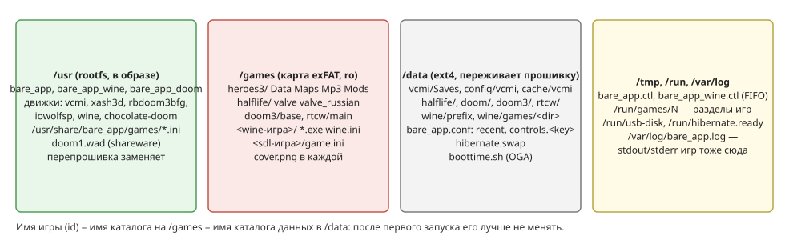
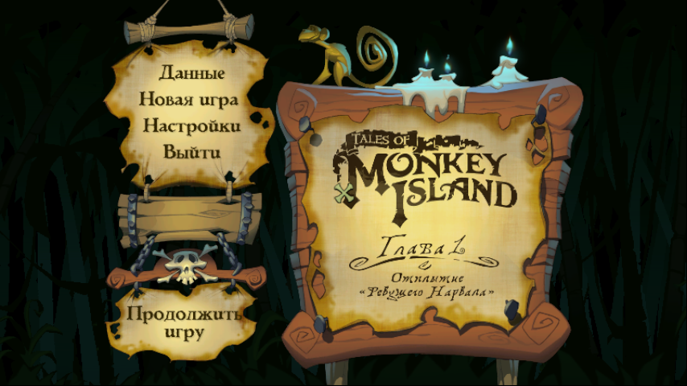
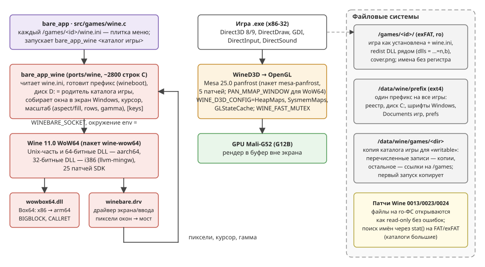
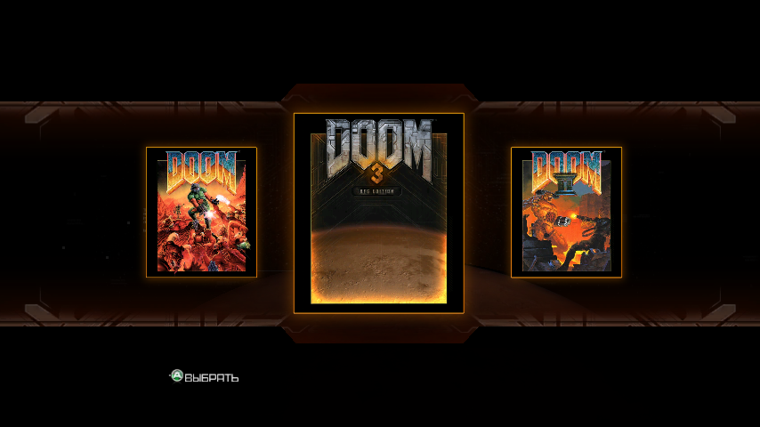
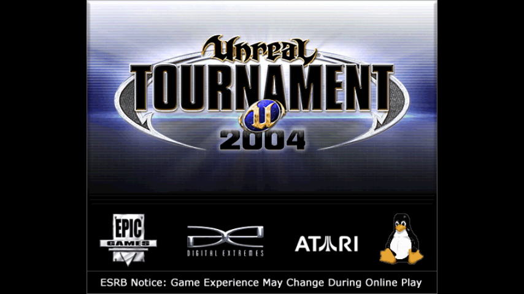
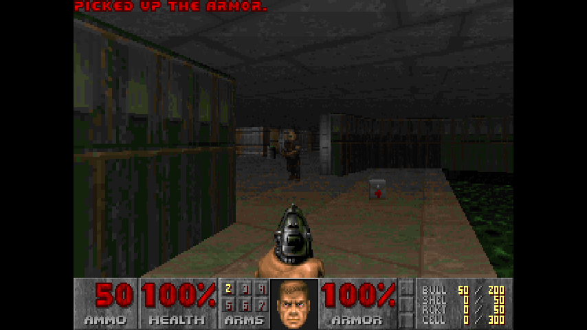
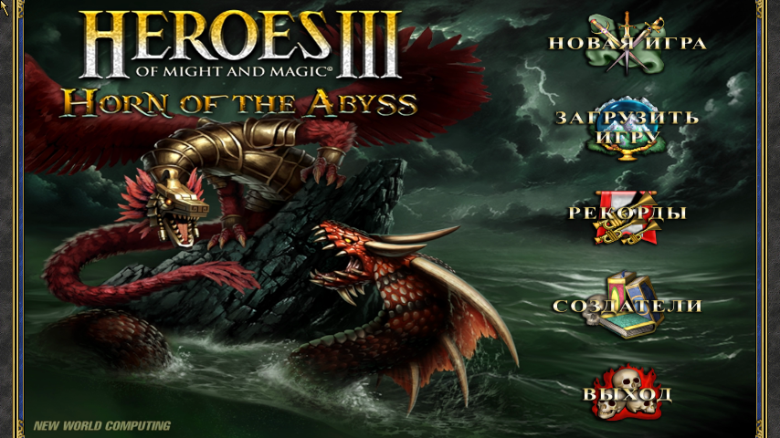

4. Игры: как устроены
Три пути
Игры запускает bare_app; каждая — отдельный процесс, который отдаёт кадры и
получает геймпад по game_ipc.h (3. bare_app). Как именно
игра добирается до этого протокола, зависит от того, на чём она написана:
| Путь | Для чего | Что связывает с bare_app | Код bare_app |
|---|---|---|---|
A. Windows-игра под Wine (wine.ini) |
x86-32 игры 1998–2010: D3D8/D3D9/DirectDraw, GDI | bare_app_wine (ports/wine) + драйвер winebare.drv внутри Wine |
не меняется |
B. SDL2-игра (game.ini) |
Linux-порты на SDL2: RBDOOM-3-BFG, iortcw, Chocolate Doom, своя программа; Linux-игры x86_64 на SDL 1.2 под Box64 (UT2004) | SDL2 SDK с драйверами bareapp (video + joystick), для SDL 1.2 — sdl12-compat |
не меняется |
C. Свой движок (struct game_def) |
движок без SDL или с особым выводом: VCMI (лупа), Xash3D, Doom (doomgeneric) | патч движка с game_ipc_client.h + src/games/<игра>.c |
один файл + строки |
Пути A и B — без единой строки кода в лаунчере. Текущие игры:
| Игра | Путь | Движок / пакет | Файлы на /games |
Данные на /data |
|---|---|---|---|---|
| Герои III (heroes3) | C | VCMI 1.7.5, vcmi |
heroes3/Data Maps Mp3 Mods |
vcmi/Saves, config/vcmi |
| Half-Life | C | Xash3D FWGS + hlsdk-portable | halflife/valve, valve_russian |
halflife/ |
| Doom | C | doomgeneric (bare_app_doom) |
doom/*.wad (иначе shareware из образа) |
doom/ |
| DOOM 3 BFG | B | RBDOOM-3-BFG, rbdoom3-bfg |
doom3/base |
doom3/ |
| RTCW | B | iortcw, iortcw |
rtcw/main/*.pk3 |
rtcw/ |
| Unreal Tournament 2004 | B | своя Linux-сборка x86_64 под Box64, ut2004 (+ box64, sdl12-compat) |
ut2004/ (Linux-установщик DVD) |
ut2004/.ut2004 |
| Chocolate Doom | B | пакет Buildroot (в ogu выключен) | — | chocolate-doom/ |
| HotA, Pirates!, Daemonica, Tales of Monkey Island ×5, Knights of the Temple, Neighbours from Hell 1–2, Prince of Persia SoT | A | Wine 11.0 WoW64 + Box64 | <id>/ с wine.ini |
wine/prefix, wine/games/<id> |
Где что лежит на плате

Правило трёх каталогов:
/games/<id>— файлы игры, только чтение, с ПК по манифесту;/data/<id>— HOME игры: сохранения, настройки (Wine: общий префикс/data/wine/prefixи копии «writable» в/data/wine/games/<id>);cover.pngв каталоге игры — обложка 240×240 для плитки;- описание (
wine.ini,game.ini) — тоже в каталоге игры на карте: в образе только движки, поэтому новая игра или исправленное описание не требуют нового rootfs. Игры без файлов в меню не показываются, а пока открыт главный экран, bare_app раз в 2 секунды смотрит на каталоги игр и перестраивает меню, когда карту вставили, вынули или на неё скопировали игру.
<id> — имя каталога, оно же имя каталога данных, оно же входит в ключ настроек
управления. После первого запуска его лучше не менять.
Путь A: Windows-игра под Wine

Tales of Monkey Island (GOG, по-русски через строкуreg) под Wine: режим 800×600, картинка 16:9 на весь экран (rows = 360 60 640x480).

Каждый /games/<id>/wine.ini — плитка меню (src/games/wine.c). По A bare_app
запускает bare_app_wine <каталог> — мост на C (~2800 строк, ports/wine),
который:
- читает
wine.ini(образец со всеми ключами — apps/bare_app/ports/wine/wine.ini); - готовит префикс
/data/wine/prefix(первый запуск —wineboot, около минуты; префикс один на все игры), дискD:— родитель каталога игры; - если есть
writable, делает копию каталога игры в/data/wine/games/<id>: перечисленные записи — настоящие копии, остальное — ссылки на/games; - применяет
reg(ключи реестра, которые писал бы инсталлятор),profile(файлы вC:\users\<user>, только если их там ещё нет),locale,dlls(WINEDLLOVERRIDES),env; - запускает Wine с
WINEBARE_SOCKET.winebare.drv(патч Wine 0003) в каждом процессе Wine подключается к мосту и отдаёт пиксели окон; мост собирает их в один экран Windows режимаmode, рисует курсор, масштабирует в кадр (scale = aspect|fill,rows,gamma) и публикует; - превращает кнопки и стики в мышь и клавиатуру по
[keys].
Wine здесь — WoW64: Unix-часть и 64-битные DLL native aarch64, 32-битные
DLL — i386 (их собирает llvm-mingw), x86-код игры исполняет wowbox64.dll
(Box64). Direct3D идёт через WineD3D → OpenGL → Mesa panfrost → GPU Mali-G52.
Этот стек — 25 патчей Wine, 3 wowbox64 и 5 Mesa; самые важные для
производительности:
| Патч | Что | Зачем |
|---|---|---|
Mesa 0005 PAN_MMAP_WINDOW |
буферы GPU в окне 0x80000000–0xffffffff | WoW64 копировал GL-маппинги выше 4 ГиБ: Knights of the Temple 6 → 60 fps |
Wine 0004/0011/0012/0018 WINE_D3D_CONFIG=HeapMaps,SysmemMaps,GLStateCache |
map буферов без ожидания CS-потока, меньше GL-вызовов | рывки Pirates! на море 170–410 мс → <90 мс |
Wine 0010 WINE_FAST_MUTEX |
неименованные мьютексы без syscall | Pirates! берёт мьютекс на каждое чтение pak-файла |
| Wine 0013/0023/0024 | файлы на ro-ФС открываются read-only; поиск имён через stat() на FAT/exFAT |
игры открывают *.lod на запись; каталоги на карте большие |
Wine 0008 WINE_FONT_SCALE, 0007 Uniscribe |
крупнее шрифт, кэш раскладки текста | текст Daemonica на маленьком экране |
Wine 0025 mouse = relative |
движения вместо позиций | игры с DirectInput (Prince of Persia) |
Box64 ускоряют BOX64_DYNAREC_BIGBLOCK=3 BOX64_DYNAREC_CALLRET=1 в env — это
общие для всех Wine-игр.
Ключи wine.ini, которые решают больше всего
| Ключ | Что |
|---|---|
exe, args |
программа относительно каталога игры |
mode, modes |
режим рабочего стола Windows и какие ещё режимы игра может выбрать; 800×600 — обычный выбор для 854×480 |
scale |
aspect (поля) или fill (каждая ось отдельно: 854×600 → ширина 1:1) |
rows = N [TOP [WxH]] |
показывать только часть строк (Neighbours: верхние 480 из 600, 1:1) |
gamma |
> 1 вытягивает тёмные сцены на маленьком экране |
locale |
ru_RU для русских изданий (кодовая страница) |
writable |
что игра пишет в своём каталоге → копия в /data/wine/games |
reg, profile, dlls, env |
реестр, профиль пользователя, overrides DLL, окружение |
mouse = relative |
для игр, читающих мышь через DirectInput |
[keys] |
stick = mouse|arrows|wheel|numpad|turn|scroll, dpad, cursor_speed, edge_zone, кнопки → lbutton, клавиши, magnify (лупа 1:1) |
[labels], [labels.ru] |
подписи кнопок для экрана управления |
minimize, volume = triggers |
своя кнопка сворачивания, L2/R2 — громкость |
Путь B: SDL2-игра

DOOM 3 BFG Edition (RBDOOM-3-BFG): обычная SDL2-программа, GPU рисует в pbuffer, драйверbareapp отдаёт кадр bare_app.
SDL2 в образе собран с драйверами bareapp (патч package/bare-app/sdl2/0001,
опция bare-app.SDL=y):
- video «bareapp» выбирается сам, когда есть fd 3 и 4. Режим рабочего стола =
видеослой; окно любого размера вписывается с сохранением пропорций
(
scale = fit|stretch|integer,filter = linear|nearest). Поверхности и программный рендер копируются в кадр; OpenGL ES рисует в pbuffer на surfaceless-платформе Mesa и читается после каждогоSwapWindow(патч 0003 — асинхронно,SDL_BAREAPP_GL_ASYNC=1у DOOM 3). Кадры не чащеfps(60) как при vsync. Настольного OpenGL нет — только GLES и compat-контекст, что iortcw и устроило. - joystick «bareapp» — один
SDL_GameController«bare_app gamepad»: кнопки по надписям (A — a), Select/F2 — back, Start/F1 — start, Menu — guide, F3/F4 — misc1/paddle1, L2/R2 — триггеры.gamepad = f3=guide, l2=noneменяет раскладку;keys = a=Space, …превращает кнопки в клавиши для игр без поддержки контроллера. Linux-драйвер джойстика выключается, чтобы те же evdev не читались дважды.
Пункт меню появляется для каждого /games/<игра>/game.ini (игра на карте вместе
с описанием: SDK кладёт его из games/<игра>/overlay, даже когда движок — пакет
образа) и /usr/share/bare_app/games/<игра>.ini (игра целиком в образе); одно имя —
один пункт, описание на карте главнее. Формат с комментариями —
apps/bare_app/docs/game.ini; пример —
games/doom3/overlay/game.ini (относительные пути — от каталога игры):
name = DOOM 3 BFG Edition
exe = /usr/bin/rbdoom3bfg
args = +set fs_basepath {dir} +set fs_savepath {data} +set r_fullscreen 1 +set r_vidMode -1 +set r_customWidth {width} +set r_customHeight {height}
needs = base/_common.resources
gamepad = f1=start, f2=none, f3=none, f4=back
keys = f2=F9, f3=F5
hint.ru = R1 огонь L1 перезарядка ... F5 свернуть F6 (держать) выйти
scale = fit
fps = 0
gyro = 9.09
[env]
SDL_BAREAPP_GL_ASYNC = 1
Подстановки в args, dir, [env]: {width}, {height}, {lang}, {data},
{dir}. needs — файл, без которого игры нет в меню. SDL2-играм bare_app сам
ставит PAN_MESA_DEBUG=noafbc.
Linux-игры x86_64: Unreal Tournament 2004 под Box64

Unreal Tournament 2004 (своя Linux-сборка) под Box64: заставка SDL 1.2 через sdl12-compat и драйверbareapp.
У UT2004 есть родная Linux-версия (Linux-установщик DVD ставит её вместе с
x86_64-бинарником System/ut2004-bin), поэтому Wine не нужен:
- Box64 (пакет
box64, тот же коммит, что и wowbox64; сборкаODROIDN2) исполняет x86_64-код, а libc, libm, SDL 1.2, OpenAL, GL подменяет родными aarch64-библиотеками. Старый C++-рантайм игрыlibstdc++.so.5(x86_64) берётся изx64libBox64 (/usr/lib/box64-x86_64-linux-gnu); - SDL 1.2 —
sdl12-compatповерх SDL2 с драйверомbareapp; патч 0001 просит настольный OpenGL там, где SDL2 по умолчанию даёт GLES, патч 0002 держит GL-библиотеку, уже загруженную окном заставки (иначе указатели на функции GL, взятые игрой, повисали, и первыйglGetStringпадал); - запуск —
/usr/bin/ut2004(пакетut2004): HOME в/data/ut2004, при первом запускеUT2004.ini/User.iniизDefault*.iniигры с наложеннымиbare_app/UT2004.iniиUser.iniс карты (джойстик, оси стиков, клавиши кнопок), размер экрана — при каждом запуске, устройство OpenAL Soft — изAUDIODEV; - установка — игра, поставленная на ПК Linux-установщиком DVD
(
linux-installer.sh, версия 3186, CD-ключ вSystem/cdkey), копируется на карту целиком ([ut2004]манифеста,install = copy) без файлов установщика, исходников SDL/OpenAL, x86_64-библиотек SDL 1.2 и OpenAL игры иUT2004.exe.
Стики — джойстик самой игры (левый: JoyX/JoyY — ходьба, правый: JoyZ/JoyR — обзор),
кнопки — клавиши: R1 огонь, L1 альтернативный огонь, R2/L2 оружие, A прыжок и
выбор в меню, B меню/назад, X присесть, Y действие. Игре нужен CD-ключ: без
System/cdkey она выходит сразу после запуска рендера («Your CD key appears to be
invalid»); его записывает установщик DVD.
Путь C: свой движок
Игра линкует game_ipc_client.h и ведёт цикл «принять кнопки → нарисовать кадр
размера слоя → опубликовать». В bare_app — src/games/<игра>.c со struct
game_def (missing, start, подсказка, громкость), строка в games.c, символ в
Kconfig, add_if() в CMake, строки i18n. В SDK — пакет движка с патчем
«платформа bare_app» и опция в package/bare-app/Config.in. Образцы:
tests/fake_game.c (минимум), ports/doom/doom_main.c, патч vcmi/0001,
xash3d-fwgs/0001.
Так сделаны Герои III (VCMI рисует 854×600 и сжимает по высоте, L1 — лупа 1:1 за курсором, правый стик и крестовина прокручивают карту), Half-Life (рендер GLES офскрин на GO Ultra, программный на OGA — Cortex-A35 читает кадры GPU медленнее, чем рисует сам) и Doom.

Doom (bare_app_doom, doomgeneric): кадр 320×200, растянутый до 4:3 по высоте экрана, по бокам поля.

Герои III под VCMI (homm3.view=fit): окно 854×600 сжато по высоте до 480, по ширине 1:1.
Обложки
cover.png делает scripts/games-image.py по ключу cover манифеста из
картинки, записи .lod/.wad (H3bitmap.lod:gamselb1.pcx, doom1.wad:TITLEPIC),
значка exe (Game.exe:icon) или кадра ролика (intro.bik:4, через ffmpeg);
game:PATH — файл уже установленной игры (UT2004: game:Help/UT2004Logo.bmp);
cover_crop режет в квадрат (center|top|bottom|left|right|fit|"X Y SIZE"),
cover_back подкладывает размытый фон под значок. Делает всё scripts/game_pictures.py
и PIL.
Управление: одни имена везде
Имена кнопок одни и те же в wine.ini, game.ini и файле настроек:
up down left right a b x y l1 r1 l2 r2 select start menu f1…f6 stick rstick
(таблица src/core/gp_names.c). Переназначение пользователем — экран
«Управление игры» — накладывается поверх ini и действует для любого пути.
Кнопки, которые остаются у bare_app: питание, громкость, F6 (выход), кнопка
сворачивания (F5, у Героев на GO Ultra F1), L2/R2 там, где volume = triggers.
Принцип из практики: курсор в игре стиком не целят — для точных кликов в
тестах есть ogu-ctl.py wfmove:X,Y wclick.